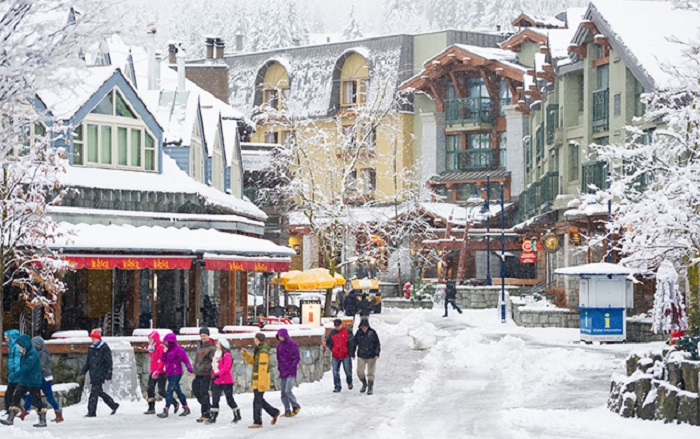
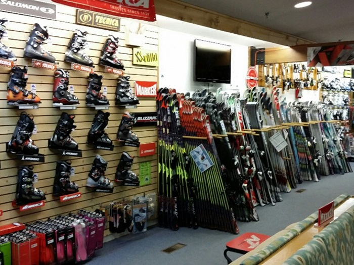

W.L.S(We Love Snowboarding) is a company located in Whistler Village, Whistler BC. We offer snowboards and accessories for kid, men, women and even seniors. We have short boards that are easier to control for beginners, medium length boards for intermediate and advanced riders, and long boards for those riders who are into backcountry snowboarding, free riding and racing.
We have extremely knowleadgeble and skilled staff to help you find the right type of snowboards and the right size of them. All you need to do is to come in,talk to our friendly staff. We will get everything ready for you. Come into our store and check out the snowboards collections in store. Let us help you find the perfect snowboard and any other accessories you need for your good time in Whislter. We are open seven days a week.
Above: our store in the village
Above: inside of our store